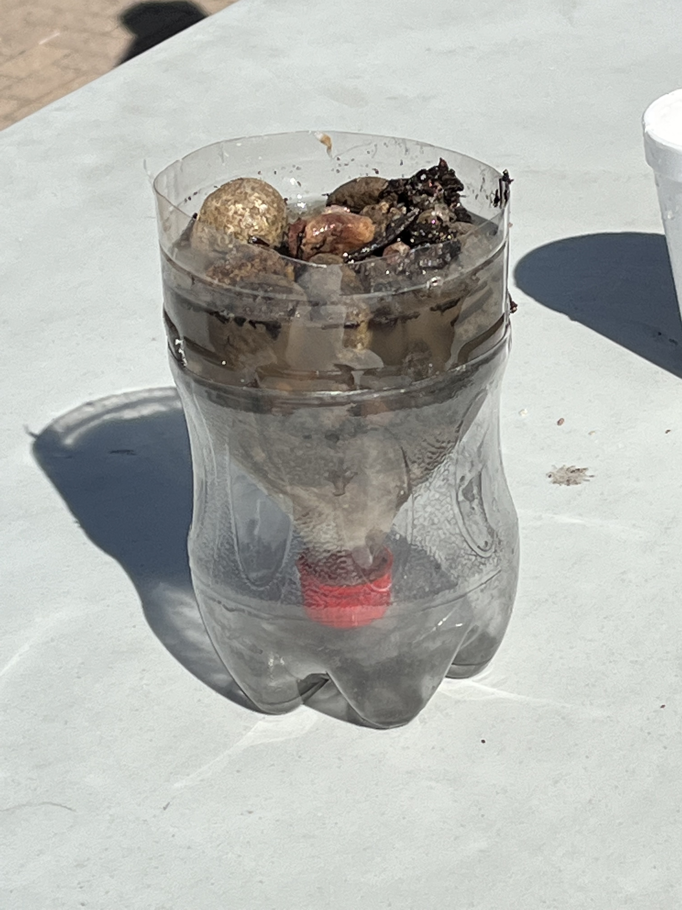

Blog #1 9-2-22 This week we were assigned to work in teams outside in the amphitheater. Our objective was to successfully work as a team to roll a small marble down a couple pipes, that would end up dropping the marble into a small cup. We were given 3-5 pipes that had been cut in half in order for us to look through the top of the pipe to see the marible roll through. We picked a team leader to help stragdisise a plan good enough to help us succeed and finish our task. The teamleader told us to let the marible roll down the first few people then run over to the end of the line and hand the pipe to someone without one. We continued this until we got the marible into the cup, which took us over 10 attempts it felt like. My team kept dropping the marible becuase they would move to early and the marible would just roll out of the pipe. Once my team finally got the small marible into the little cup, the TA gave us a bigger marible to roll down the pipes. The marible wouldn't fit the pipes because it was to big and kept getting stuck.
Blog #2 9-9-22 This week in class were had to bring a object from home and recreate it in tinkercad. My object was a number counting thing (I forgot the name of it) but at first I thought it would be a easy object to recreate, but soon after I found out it was harder then expected. I spent probably the most time working on the base shape for my number counter. Then I worked on getting the right width that I wanted which was pretty easy. Soon after I worked on getting the right shapes for the numbers and the ring that sticks out of the top. I used a mix of two shapes to create the ring becuase the shape never came out correct and it always came out looking weird. The button that you push down in order for it to count numbers was annoying as well, becuase I kept making it too thin or too wide. I had a fun time recreating this object but if I could've picked a different object I would switch it for sure.
Blog #3 9-16-22 This week we worked in groups again but this time it was kinda boring because my group didn't really talk that much. One kid in my group didn't talk at all the whole time he just kept using the box cuter to make random shapes in the cardboard. Another kid helped cut one thing then started cuting random stuff like the other kid, then he started making a paper air-plane. Jonah was doing the most work in the group becuase his laptop has all the measurements and instructions but he also didn't really talk. How can I help my team if they don't tell me how I can help, I can tell my group doesn't really like working as a group becuase they are all doing their own thing. I feel that my group members are smart but they don't like working with others, which doesn't help me.
Blog #4 9-21-22 Working on our Rube Goldberg project was fun but was also kinda annoying. Jonah Barty did most if not all of the work while me and the others tried helping, but it still wasn’t as much work as what Jonah did. I helped brainstorm some ideas and helped develop ideas to fix a problem. One kid in our group was on his phone the whole time playing video games instead of helping us. I think I spent more time trying to get him to help us than actually doing something productive. Once we finally got everyone working on something the project started moving fast. We are almost done with our project we just have one more class period to finish adding stuff and to test our final project.
Blog #5 9-21-22 We finished our project finally and we were just waiting for an opportunity to test it. In the meantime we were just checking everyone’s project, to see what people did differently. We also went into the other class to see their projects and the whole class had some really cool designs. One of my friends in the other class had a counterweight system and it looked really complicated. Another group used a pulley system to lift and lower the car in order to pop the balloon. After checking out other groups we started testing and our project worked pretty well, the second time at least. The first attempt failed because the needle went under the balloon instead of popping it.
Blog #6 10-3-22 We started the class with being told the instructions and how to follow them correctly. Then each group was given a laptop which we had to take apart while also labeling and color the laptop parts. My group started off good until we ran into some annoying screws that were a pain to get out. It was fun taking apart a laptop until we had to put it back together. Other then disliking putting it back together I would want to do it again. During the next class we went over bioengineering it seems cool but not for me. We learned how they use their information about biology and engineering inorder to help people live a better life. It is cool how they use their information about biology to give us medicine and prosthetics. As much as I think we need more people to help advance these ideas, I just dont think it's what I want to do in my future.
Blog #7 10-10-22 We did a fun challenge where we wrote down instructions on how to make a PB&J sandwhich. As we wrote down how to make a PB&J sandwhich we thought that whoever made the sandwhich faster made the best instructions. As we went on making short and straight to the point instructions no one took into consideration that we need important steps. We forgot to add stuff like open and close the Jelly jar or open the peanut butter jar. So when we had a volunteer, he couldn't even open the jar so it was a failed challenge. Then the teacher finally let him open the jar to see how far he could go without missing a step. One person didn't say to use a knife so he had to use his fingers to spread the jelly and peanut butter. I also forgot to account for cleaning up and opening the jars.
Blog #8 10-31-22 In class we learned about Aerospace engineers and what cool stuff they build such as aircraft, spacecraft, satellites, and missiles. After learning what they build we had a guest speaker tell us more information about Aerospace engineering. I thought what he was saying was pretty interesting and how everything works together in a cool manior. We then got into groups and started working on coming up with a design for our rocket. Using CAD we started designing the measurements for each part of our rocket. We had some good ideas but we just didn't know how to put those ideas into reality.
Blog #9 11-1-22 After getting all of our measurements ready for each part we just forgot about our plans for the design since we didn't have the parts we had in mind. So we ended up just winging it, which didn't workout good for us. My group just made a basic jocket model, folded paper for the nose of the rocket, and used a empty coca cola bottle flipped upside down. We also used cardboard for the wings of the rocket and cut them down to the same size on each side of the bottle. When we were finally finished working on the rocket it was time to launch it. After waiting for everyone else to shoot their rockets it was finally time for our's, once it took off it started spinning in circles and then crashed into the ground. So our rocket design was a fail. I think the reason our rocket didn't work was because the measurements were off since we winged it and did everthing last minute. I think our rocket could've been better if everyone put forth more effort and brought more parts for our rocket.
Blog #10 11-7-22 In class we learned about enivironmental engineering, which helps the enivironment such as helping air pollution. The next class period we had to work in groups to figure out how many candy corn would fit on a single sheet of office paper. First my group started lining up the candy corn vertically then horizontal until we reached the end of the paper then repeated that for the next row. I forgot what number we ended up getting but we were way off from the actual number of candy corn that could fill the paper. The number of candy corn was 222 and I think my group was in the 100s. The next class we started making water filters by using rockes, sand, and paper towels. I had to leave during the assignment so I don't really know what we were trying to achieve by making this.

Blog #11 11-11-22 In class this week we learned about electrical engineering. They mainly work with hardware like circuits and some coding. We also learned different types of circuits like parallel circuits and series circuits. We made the circuits on CAD one parallel, one simple, and one series. The cool part about parallel circuits is the fact that if one part of it doesn't work the rest after that part still works. While with the series if one part doesn't work the whole thing doesn't work. While I was making the circuits on CAD I found out I was placing the resisters in the wrong spots so the LED light wouldn't glow.
Blog #12 11-11-22 In class this week we worked on breadboards using our CAD designs. It was pretty fun for a little bit until we had to make a circuit that I had a hard time making. The goal we had to achieve was getting the LED light to glow. We had to work with a partner to achieve that goal, even with me not knowing much I still tried. We also had to use the multimeter to measure the volts and resistance. Then after testing the resistance and volts we had to write down the information. Soon after I wrote down some infomation I left class early to go to the health office.
Blog #13 12-2-22 In class this week we started talking about our final by coming up with some ideas for spaghetti bridges. Our final is based on how well we build a spaghetti bridge that can support the weight of a bucket, that is going to be hanging on the bridge by using 2 clips which are going to be attached to the bridge. Our goal is to build a bridge that is long enough so it reaches a distance of 24 inches and along with the long length it also needs to have a strong structure that's able to hold up a bucket with lets say 1 gallon of water. Knowing that information my group has been trying to figure out a design for our bridge that is strong but also made from a 1 material spaghetti, over a specific span, that can sustain a load. Our first design we thoought was going to do good, but after letting the glue dry we realized that we put to much glue on the spaghetti. While I was trying to take the spaghetti off the paper towel it broke and we didn't want to waste so we used the broken part for our new design.
Blog #1 1-9-23 This week in class we started talking about business engineering we had to watch and take notes on what happens in shark tank. Then after we had to come up with products that dont exist yet, my group took inspiration from other products and tried to imporve them. We had to make a slip show including the basic information a product on shark tank would have and more. Our product was called Ediaper, it was a type of diaper with a sensor that will notify the parent when the diaper is full or needs to changed. It was a better idea on paper but once we started show casing it, it started to seem like a bad idea. I feel like our idea would be better if we had done more research on our product and what we need for it to be used by everyone.
Blog #2 1-17-23 This week we started talking about chemical engineering we also had a challenge that went something like a lake has bromide, chlorine, and sunlight, which makes it carcinogenic. The lake also has 60 million gallons of water and the lake is used by 600 thousand people. I couldn't think of an idea although the people behind me came up with a cool solution but I forgot what it was. We also started making oobleck on friday, it was pretty fun to make and mess around with but it got everywhere. It got in my partner's backpack and laptop which sucked to get out. Afterwards it was pretty easy to clean up though so that wasn't to bad thankfully.
Blog 3-8 Project 1 3-10-23 Each group had a choice to pick between Arduino car or a mousetrap car. My group picked the mousetrap car approach since we thought that would be the easiest one to make. First we started off the project with a tinkercad design of an idea of what we wanted our mousetrap car to go off of. On the same day we had a challenge which was a test to see which group could carry a water balloon with just rubber bands and sticks for a 100 metter race. I had fun working with my group to make a stressful contraption to carry a water balloon that barely made it past the finish line. The next week came and the hard part was creating a body for the car that best fit our ideal design or that was compact enough to not be too heavy. Once we got a idea of what we wanted we started creating it with cardboard, hot glue, and tape.
Afterwards we had to do research on what materials we were gonna use and details about it basically. We had to add it all up into a document which took a little while for my group if i'm being honest. This is a list of stuff we had to research or add to the doc such as the project description, project research, design constraints, bill of materials (BoM), schedule of milestones, and team member biographies. It took me a long time to finish researching the bill for the materials beacuse I didn't know what the materials were that we were gonna be using. Coming up with the schedule for the milestones was also kinda difficult beacuse I pretty much expected the worse when thinking of how my car would turn out.
When my group finally got all of our materials group's car parts were made up of a mousetrap, cardboard, DVDs, tape, zip ties, straws, string, and hot glue. We got all our materials from our class or Mrs. Kim's class, most of the stuff we used in our project was from his class. Me and my partner after spending time working and putting the car together realized that our base for the car was messed up so we took it apart and started working on another base. This time our base was gonna be better to suit our needs and wants better. Once we got an okay idea of what we wanted our base to be we started adding on to it such as cutting straws and putting them into the cardboard in order to form the axle. Then hot glued cardboard onto the DVDs and poked a hole through the cardboard so when we put a stick through them it wouldn't wiggle so much. That idea worked for the most part but towards the end when we started testing it kinda moved a little to the left, so when we tested it we had to angle the car at kinda a right angle so that way it moved towards where we wanted it to go instead of into someone else's car. Overall our mousetrap design worked pretty well and effectively which ended up getting us past most people if not everyone during the time we tested it. I thought our design wasn't going to work but once we started making more adjustments we started seeing improvement. Overall I say me and my partner did pretty well with our weird and interesting design.
Blog 9 3-9-22 We had a challenge where we had to make a boat using very few materials. We had like 2-3 balloons, 1 cup, 4 popsicle sticks, 2 rubber bands, 2 straws, a few pipe cleaners, 3 safety pins, and 2 sheets of thick paper. My group choosed to go with the decision of stacking the thick paper onto each other and putting the straws under the paper. Then using the pipe clears we poked them through the paper at first to maybe help keep the cup from moving or something like that. We then decided to put the cup on top of the paper and to safety pin the cup down so it doesn't move but so it picked up the wind to move forwards. Once we tested our boat I didn't expect it to move at all to be honest but I was proven wrong after my partner blow air into the cup moving it forwards. We didn't go past the halfway mark buyt it was still pretty good considering I had no faith in it going anywhere.
Blog 10 3-24-23 We worked on making a sketch of our egg drop designs on wednesday and continued that through out the week. Me and my group’s design was a box like structure and other factors surrounding the egg inside the box. There is cotton balls surrounding and taped onto the egg along with other stuff on the egg. Then around the stuff on the egg there is straws poking through the box and going around the egg making it stay in place. On the outside of the box we have balloons taped onto the box/straws to help it glide down when falling. We also found out we could run a simulation in tinkercad so I was messing around with that testing my design i guess you can say.
Blog 11 3-31-23 This week we worked on planning, designing, building, and testing egg drop designs. The goal was to design a contraption or object that could hold an egg inside and keep it from breaking. The object and egg would be dropped from the 1 thousand building stairs and we had to figure out away for the object to withstand the drop. My group's design was made up of tape, cardboard, string, popsicle sticks, cotton balls, a ballon, and a trash bag. Are egg sadly broke but I feel like our design could've worked in the end if we designed it better and made little changes. There was a lot of cool and creative designs that worked and others that didn't work so well but over all I say people had great ideas. It was a fun project to work on but I feel like the lack of materials didn't help much but we did what we could.


Blog 12 4-7-23 This week we started preparing for our up coming project which involved creating a boat using just cardboard and a yeard of tape. The goal for this project is to design a boat that can carry two people on water, our source of water is gonna be the cv pool. Along with carring two people the design also has to float on the water while also being able to move on the water. So we need to come up with an idea of how we would move the boat, at first we thought of a paddle that we could use to row with or something but I heard someone talking about leaving an opening in the back so they could kick their feet to help move the boat. I dont know what we are gonna use to create movment but as of right now I plan on finishing the base design of the boat first before we try creating something else.
Blog 13 4-14-23 This week we started building our boats or at least getting a rough idea of what the final design was gonna end up looking like. My group started cutting out small pieces of cardboard which we are gonna make a small model out of it to get an idea of what the final design will kinda look like. I dont think our initial idea isn't the best so if anything we can fix or change some stuff along the way. On friday I spent most of the class updating my website so that took some time then after we continued working on our small model. I feel like we have a good idea for the base area but for the outer rims or sides of the boat aren't the best.
Blog 14 4-21-23 After finally cutting out all the small pieces of cardboard necessary for us to build or put together our prototype, We maded a small model of our actually boat to give us an idea on how the finally design would work. After spending time taping the pieces of cardboard together we were ready to test our prototype on the CV pool. Once we get the brick we would be putting into our boat I felt like it was gonna sink it or weigh it down slowly but I soon was proven wrong. We put the boat on the water and it already was floating nicely along with no water getting inside then we started putting the bricks into the boat. The first brick gets placed into the boat gently and it didn't sink or weigh it down, so we added another brick on the oppisite side of the boat to simulate a counterweight system which worked pretty well. Some of the tape was starting to unstick so water slowly was entering the boat, but that wasn't enough to stop us so we added another brick. It was holding up pretty well so we added another brick, it wasn't sinking but it was slowly filling up with water which would ended up sinking the boat at some point. Overall I think the prototype worked pretty good maybe we could improve the tap job on the sides and bottom but besides that we had good weight distribution.
Blog 15 4-28-23 This week my group was still plainning how we would put together the boat and where we should tape the key parts of the structure to not waste tape but also having an effective boat. We were waiting for more card board to add to our bottom part of the boat or our base of the boat. We decided to make the sides of the boat smaller and not as big while keeping the size of the rest of the boat the same. We are still in the process of cutting out the right pieces we want but we know what we want and how we are gonna use it. We picked two members of our group to be in the boat when we finally finish our design, me and Ben will be in the boat.
Blog 16 5-5-23 We continued working on our boats in class we couldn't work in the hallways or the other classrooms so the classroom was packed with everyone's boats. My group finished cutting the last pieces of cardboard that was needed to fill in the gaps on the corners then started taping. We started taping the corners down to get a sense of what the structure will look like along with keeping everything together while we build the rest. We are using little amounts of tape currently which is good in the long run, I feel like our design was good but now as it's taking shape that it's not coming out too good. I think we can make better fine tuning later on but as of right now we just need to get a base and idea of the final structure that holds up.
Blog 17 5-12-23 This week we started working on paper roller costers with a small group of ppl. The goal of this challenge is to create a roller coster with 2 loops and the marible can't get stuck while going through the roller coster. Building the roller coster was probably the annoying part of the week bc it was a pain to try folding a loop that works correctly, our marible kept getting stuck in the loop bc of the angle or how it didn't have enough momentum. My group that im working with for the boat project continued to cut and tape together our boat making it bigger and making a stronger base. I Like how our boat iscoming along, I think our sides will do kinda alright in the water. I mainly think our base is our best bet to staying at float but I also think my body weight and my partner's combined will end up sinking our boat.

Blog 18 5-22-23 Something interesting happened this week was one of my partners was using a box cutter to trim the edges of our boat when he pulled the blade too much to his hand which ended up cutting his thumb. We ended up not working on the boat until he came back so we could all work on it together. After he finally came back we continued working on the boat and ended up finishing our design along with using all of our tape so when we finally test our boat we probably wont have a good base since there's no tape on some sides. I also didn't work on the final design for the roller coster since I was busy working on my boat but my group made a cool looking paper roller coster. I don't remember if their design worked or not but it still looked cool. I'm not too excited to see how my boat works on the water but I do wanna see how other people's designs work.

Blog 19 5-26-23 This week we had a challenge and our instructions were to build a book stand that would prevent books from falling over. We were only given paper and tape to create a system that works and we had the whole class period to work on it. The group I wroked with on this challenge had some pretty good ideas and worked well together to create a book stand that worked. I think the final design looked messy if I'm being honest but it was effective which is what mattered in the long run. We also had time on friday to do some final touch ups on our boat like taping the corners and sides since we ran out of our tape last week.
Google